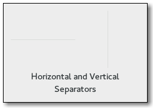

Gtk.Separator¶
Example¶

- Subclasses:
Methods¶
- Inherited:
Gtk.Widget (278), GObject.Object (37), Gtk.Buildable (10), Gtk.Orientable (2)
- Structs:
class |
|
Virtual Methods¶
- Inherited:
Properties¶
- Inherited:
Style Properties¶
- Inherited:
Signals¶
- Inherited:
Fields¶
- Inherited:
Name |
Type |
Access |
Description |
|---|---|---|---|
widget |
r |
Class Details¶
- class Gtk.Separator(**kwargs)¶
- Bases:
- Abstract:
No
- Structure:
Gtk.Separatoris a horizontal or vertical separator widget, depending on the value of theGtk.Orientable:orientationproperty, used to group the widgets within a window. It displays a line with a shadow to make it appear sunken into the interface.- CSS nodes
Gtk.Separatorhas a single CSS node with name separator. The node gets one of the .horizontal or .vertical style classes.- classmethod new(orientation)[source]¶
- Parameters:
orientation (
Gtk.Orientation) – the separator’s orientation.- Returns:
a new
Gtk.Separator.- Return type:
Creates a new
Gtk.Separatorwith the given orientation.New in version 3.0.